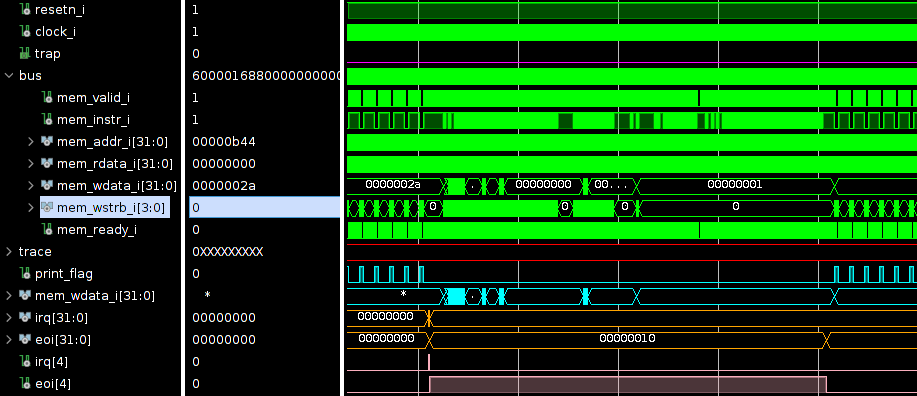
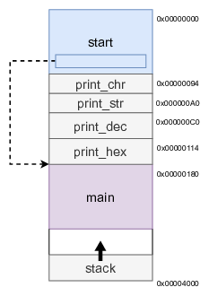
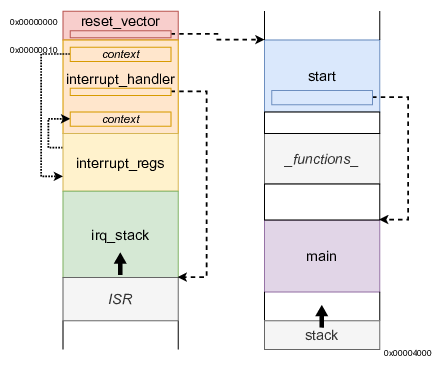
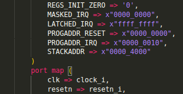

Interrupts can be generated by both hardware and software, but hardware-interrupts are focussed on here. A processor typically has a number of hardware interrupts. These signals are connected to the cores that generate interrupts.
When a core wants to signal an interruption, it raises the signal. This is called an Interrupt Request (IRQ). The processor has to halt its operation, to the interrupt can be handled. However, the processor has a context. There are values in the registers and the stack pointer and program counter are set to a certain value. Before the processor can drop what it’s doing, a backup of this context has to be made.
After backing up the context, the processor runs some software code that handles the IRQ. This small piece of software code is the interrupt handler or interrupt service routine (ISR). It’s trivial that, after the execution of the ISR, the backed-up context needs to be restored.
Interrupt service routines should not take too long to run. After all, the complete system is waiting for it’s end, before it can continue.
For the sake of completeness it is mentioned that interrupts can also be nested, as in: an interrupt during the execution of an ISR. Typically, there is a hierarchy that decides which IRQ has priority.
The RISC-V implementation of the PicoRV32 allows the usage of interrupts, albeit not entirely according to the RISC-V specifications.
The IRQ handling features in PicoRV32 do not follow the RISC-V Privileged ISA specification. Instead a small set of very simple custom instructions is used to implement IRQ handling with minimal hardware overhead.
To use interrupts with the PicoRV32, the generic ENABLE_IRQ needs to be enabled. This enables the use of the 32-bit irq input that provides the IRQs. When an interrupt is getting handled, the PicoRV32 signals this by raising the corresponding eoi (end of interrupt) signal. When the interrupt is handled, this signal is dropped.

This all looks nice-and-simple, but there are quite some things going on under the hood.
The first parameter we can look at is where to processor starts running code. Until now, the objectdump look something like shown here. At address 0x00000000 the initialisation was done. This code came from the start.S file and it initialises all 32 register to 0x0, sets the stack pointer (sp), and jumps to the main function.
Subsequently, the functions are place in the memory space. Every function that is required in the program is put sequentially.
Finally, the main function is positioned. Typically, the main function never exits. There some outer loop that keeps on running. In case the main function would exit, the processor goes back to which ever function called the main function. In our case, this is the start. The only thing the start does, in this case, is stopping the processor with the ebreak command.
At the highest address (of the allocated memory space) the stack is put. As a reminder, the stack grow in the opposite direction, when required.


When adding the interrupt functionality we have to define some more sections.
The start of the program is placed in the reset vector . This section acts a sort of boot-loader. The absolute minimum of settings is done, after which a jump to the start is made. A frequently used technique is restrict the size of the reset_vector. This ensures that the next section (the interrupt vector) can start at a fixed memory position, irrespective of the length of the start.
The interrupt handler section holds the assembly-code that is responsible for the backing-up and restoring of the context. Of course, between the backup and restore of the context, the interrupt service routine should be called. Another sections that has to be defined is that of the location where the context may be stored: interrupt registers .
Finally, also the interrupt handling can make use of a stack. This interrupt stack is independent of the normal stack.
Note that the addition of these sections, doesn’t affect the main other than a relocation of its starting address.
As can be seen from the image above, there is one arrow that connects the left hand portion to the right hand portion. With this observation, it can be asked HOW the processor switches back from right to left? The component that takes care of this is processor itself. There has to be some hardware block that allow for interrupts. If an irq arrives, the program counter is automatically set the interrupt vector.
You might have already noticed when instantiating the PicoRV32, there are some generics/parameters that have to be set. The PROGADDR_RESET is a 32-bit vector that defines the address at which the processor has to start running, after reset: the reset vector . In the example above, this is kept at the default: 0x00000000. Next there is the PROGADDR_IRQ which is a 32-bit vector that defines the start address of the interrupt handler . This, also, is kept at its default value: 0x00000010.
